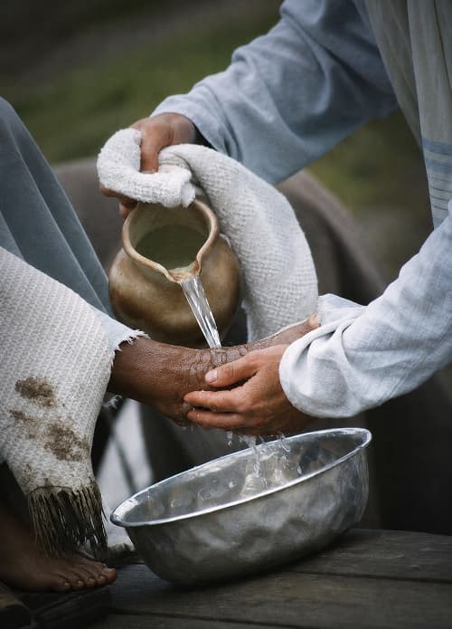

Operation Barnabas International comes alongside indigenous pastors and their wives around the world—affirming their value, renewing their vision, and deepening their spiritual lives.
“How beautiful are the feet of those who bring good news!” Romans 10:15

Our calling
The unknown, the unheralded, the faceless and forgotten.
Discouragement is a scourge on Christian leaders—pastors, evangelists, and missionaries—because it renders them ineffective. Since 1996, OBI has met that need with encouragement and advocacy for the shepherds of God’s flock overseas.
Conferences and informal village encounters bring together sound Biblical preaching, spirited worship, and warm fellowship—with good food, clean bedding, and soap and water for those who struggle in ministry.
Ministry team members often “catch the vision” and return home to advocate for their fellow laborers overseas, supplying resources so shepherds can fulfill their divine calling.
“OBI is triage! …the place where God brings His church together to send His love and assurance, His strength and anointing, to those who are the weakest, the most frail, and to those who are most likely to ‘not make it.’”
This fall, OBI held two conferences for pastors in India, the first for about 50 pastors and the second for about 60. It was OBI’s sixth overseas trip of 2026…
In September, at the invitation of a Tanzanian mission leader, OBI trained five leaders to conduct OBI conferences for pastors in their own country, where many pastors are deeply discouraged…